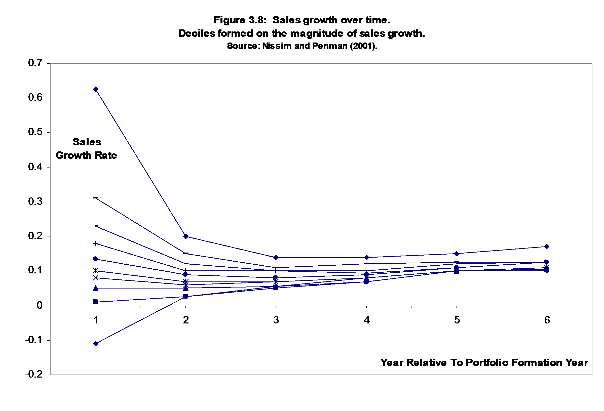
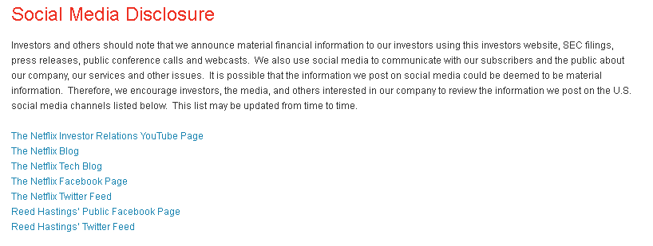

Forecasting Company Sales
Analytic Mindset Keywords:
Forecasting, Voluntary disclosures.
Analytic Skillsets Keywords:
Forecasting, messy data, alteryx/powerBI.
Contents
Netflix’s Operating Segments 7
Customer Forecasts for Netflix 9
Case Brief
How can Netflix best increase revenue from customers?
Your consulting firm has been requested by Netflix to develop one strategy to increase revenue from customers. You have been asked to pitch a new strategy. To do so, you need to think about Netflix’s prior strategies and how they have influenced subscriber growth. You will have the opportunity to discuss the rationale for and the practicalities of your recommendation(s) in class.
Future growth for Netflix is unlikely to stem from global expansion, as Netflix operates in almost 200 countries worldwide (Stelter 2016). This means that you will have to propose a more innovative strategy that will allow for organic growth of the company.
Enjoy and be creative and innovative in this case!
Accounting Analytics
Sales Forecasting
Every financial statement forecast begins with a sales estimate. Typically, the sales estimate is then combined with margin forecasts to estimate future income, and combined with turnover forecasts to estimate future assets, but the entire process is predicated on a precise sales forecast. In this case, we will explicitly incorporate information from two distinct sources of future sales growth – changes in the number of sales-generating units (e.g. new subscribers) and changes in the rate of sales per unit (e.g. the subscription fee Netflix can charge).
Netflix is a subscription service and their revenues can be considered most simply as a function of the number of subscribers they are able to retain times the subscription fee they are able to charge, this can be written in terms of sales growth as follows:
(1)
Note that all the terms are in percentages, for example, the percentage growth in the number of subscribers is calculated as (.
The formula can be rewritten to calculate the dollar value of the increase in sales as:
(2)
where subs is short for subscribers and rev is short for revenues. The subscript t refers to the most recent number of subscribers and revenue per subscriber and t+1 is the forecast.
Challenges: Successful start-up companies tend to have extremely high growth rates in their early years due to the small number denominators (i.e., the small number of people subscribing to the service in the early years). Sales growth rates have a strong tendency to mean-revert. See Figure 4 which provides evidence of mean-reversion for a large sample of publicly traded firms.
Figure 1
Evidence of Mean-Reversion in Sales Growth

Notes: This figure is based on Nissim and Penman (2001). Each line represents the average sales growth rate for a portfolio of firms. Each of the 10 portfolios are formed in year 1 based on the level of sales growth. The top group represents the top 10% of firms ranked on sales growth in year 1, and the bottom line represents the bottom 10% of firms ranked on sales growth in year 1. Over the subsequent five years, the differences between the portfolios narrows, with all portfolios moving closer to the mean; we label this regularity as “mean-reversion.”
Customer Churn
In addition to acquiring new customers, companies are concerned with customer retention. A useful business statistic is the churn ratio. The goal of calculating the churn ratio is to measure customer churn – the percentage of customers that stop using the service.
Challenges: From Equation (1) notice that for every customer lost, a new customer must be acquired to achieve a growth rate of zero. In percentages, this is additive. That is, to achieve a target percentage growth rate the percentage churn rate must be added to the actual growth rate. For example, assuming Netflix has 40 million subscribers and a churn rate of 5%, to achieve 10% growth and reach 44 Million subscribers, new acquisitions must equal 6 million customers, or 15% new acquisitions.
Measuring Churn: As Netflix is a subscription service we are interested in considering how many individuals cancel their subscriptions. As such we would like to be able to measure churn as:
(3)
where is the average of the beginning and ending number of subscribers over which we are measuring churn (for example one year). It is difficult to estimate churn without the number of cancellations. As mentioned above, Netflix stopped providing this information in 2011.
Application to Netflix
Netflix, Inc. was founded in 1997 and is headquartered in Los Gatos, California. Netflix, Inc. provides subscription-based Internet services for TV shows and movies in the United States and internationally. Netflix began as an alternative to the traditional “brick and mortar” DVD rental stores which was dominated by the now bankrupt BlockBuster. The innovation that Netflix provided was to offer a subscription service with DVDs being delivered by mail. This innovation was initially very successful, appealing to consumers due to the convenience of receiving DVDs by mail, the large selection of DVDs available, the useful interface that helped consumers select movies they would like based on their ratings of prior DVDs viewed and a flat rate monthly subscription fee meant that there were no penalties for returning a DVD late.
With broadband becoming increasingly affordable during the 2000’s the company was among the first to provide online “streaming” of video material over the internet. Currently, the company allows its subscribers to watch unlimited TV shows and movies streamed over the Internet to their televisions, computers, and mobile devices. Its subscribers in the United States can also receive standard definition DVDs and Blu-ray discs delivered to their homes. As of December 31, 2010, the company had approximately 25 million subscribers, and was growing rapidly.
Netflix becomes a “Darling of Wall Street”: By the middle of February, 2011 Netflix was trading around $240/share, giving it a market capitalization of approximately $12.5 billion. One year earlier, Netflix was trading around $60/share, giving it a market capitalization of approximately $3.1 billion. The fourfold increase in the share price was not all “smooth sailing” but led to an impressive following of the company from analysts and other market pundits. Many of these observers have made their claims as to why Netflix has had significant growth and share price volatility. The careful financial analyst, however, maps qualitative assessments and analysis into a quantitative accounting based framework, thus allowing him/her to offer a more informed perspective on why Netflix’s value has fluctuated significantly over the past two years, and a more precise forecast.
Netflix announces but later abandons “Qwikster”: Later in 2011 Netflix announced that they planned to split the disc based mail delivery service and the online streaming service into two separate products. The plan was to relabel the DVD delivery business as “Qwikster” in order to better focus on providing their online service, although at the time Reed Hastings did state "it is possible we are moving too fast—it is hard to say." The market reaction to this announcement was very negative, and Hastings quickly reversed course, keeping Netflix as a single company (Woo 2011).
Netflix expands worldwide (except for China): Netflix first began expanding globally in September 2010 to Canada. By January 2016, Netflix had expanded to 190 countries (Stelter 2016), which is roughly were it is available as of 2020.
Figure 2
Netflix’s Global Reach
Notes: This figure is taken from Stelter (2016) and displays the global reach of Netflix, with the 190 countries where Netflix operates shaded in red, the most notable exceptions in grey (where Netflix does not operate) include China, Crimea, North Korea and Syria.
Netflix stated that their choice of not getting into the Chinese market is due to “The regulatory environment for foreign digital content services in China has become challenging,” and instead, they opted to “We now plan to license content to existing online service providers in China rather than operate our own service in China in the near term.” Analysts and the media, however, assume that there is some possibility that Netflix will enter China in the future (Poletti 2016).
Netflix’s Operating Segments
Netflix maintains three operating segments, domestic streaming, domestic DVD delivery, and international streaming. The recent focus of the company is on their streaming products as can be seen with the recent move into producing “Netflix Originals.”
Netflix original programming: Beginning in 2013 with the premiere of “House of Cards” on February 1, 2013, Netflix began producing their own television shows, and later documentaries and movie-length features. As early as 2016, they were expected to launch 126 Netflix original series or films, making them the most prolific content provider. As of 2020, many of these titles have been very successful. | Figure 3 Why Do People Join Netflix? | |
Notes: This figure is taken from eMarketer (2016) and displays the % of respondents to a Cowen and Company survey of Netflix Customers. | ||
The appeal of Netflix original programming is apparent from a 2016 survey of Netflix users who rank the availability of Netflix Originals as equal third reason to join Netflix.
Netflix’s Disclosure Policy
Netflix, like most large publicly traded companies, has a dedicated investor relations (IR) team that facilitates the disclosure of all publicly required filings. See: https://ir.netflix.com/. Despite this, Netflix has attracted significant regulatory scrutiny for a couple of their disclosure choices.
Disclosure of Churn: In 2011, the Securities and Exchange Commission (SEC) queried Netflix on their decision to cease providing information on changes in their subscriber base including “gross subscriber additions, subscriber acquisition costs and churn.” These useful, but voluntary, disclosures are no longer a feature of the excel spreadsheets that Netflix provides through their IR website. Many analysts, however, considered these to be useful metrics (see Savitz 2011).
Disclosure on social media: In July of 2012, Reed Hastings attracted the attention of the SEC from his decision to post on Facebook that Netflix had surpassed one billion hours of streaming video in a single month. The stock market reacted to this news prompting enquiries into whether this disclosure was selective disclosure (as his Facebook friends are the only ones who could see his post). The SEC considered brining charges against Reed Hastings in December 2012, but later determined not to undertake an enforcement action. Interestingly, this sparked a change at the IR website, which now includes a webpage that facilitates access to their social media disclosures – see Figure 3.
Other concerns: Some analysts have questioned Netflix accounting, among the more critical perspectives is the firm New Constructs, who provide estimates of how misleading they believe earnings are for thousands of companies. In their most recent report on Netflix, they consider Netflix’s earnings to be “dangerously misleading.”
Figure 4
Netflix’s social media disclosure

Notes: This figure is taken from Netflix’s Investor Relations (IR) webpage, see: https://ir.netflix.com/social-media-disclosure.cfm
Customer Forecasts for Netflix
In their 1/3/17 report JPMorgan forecast Netflix’s subscriber base in the US to be 53,200,000 by the end of 2017 growing to 60,603,000 by the end of 2019. In contrast, they expect significant growth in international subscribers, forecasting 56,405,000 subscribers by the end of 2017 growing strongly to 85,477,000 subscribers by the end of 2019. As of the June 30, 2020 quarter end, Netflix disclosed having 72,904 paid memberships in the US and Canada, and over 119 thousand paid international subscribers. Netflix certainly beat the JP Morgan forecasts. The question is, however, how much more growth in their subscriber base can Netflix obtain?
Conclusion
Overall, customer acquisition and retention are the drivers of Netflix’s revenue growth and profitability. Strategies that enhance either or both customer acquisition and retention are of benefit to Netflix. With significant global expansion already underway, a creative and innovative solution is required. What do you suggest?
Data and Resources
The following data and resources are available in the case supplement:
The Netflix 2020-Q2 financial disclosure (note that we are most interested in the regional information tab of that spreadsheet).
Note that additional suggestions may be available sporadically in the Canvas discussion or the webpage relating to this case if Netflix releases newer quarterly financials.
References
eMarketer. 2016. Netflix Reports Churn as Subscribers Leave over Price Increase: https://www.emarketer.com/Article/Netflix-Reports-Churn-Subscribers-Leave-over-Price-Increase/1014254.
Nissim, D., and S. H. Penman. 2001. Ratio Analysis and Equity Valuation: From Research to Practice. Review of Accounting Studies 6 (1):109-154.
Poletti, T. 2016. Why Netflix gave up on streaming into China, for now: MarketWatch: http://www.marketwatch.com/story/netflix-takes-china-off-its-to-do-list-for-now-2016-10-17.
Savitz, E. 2011. Should Netflix Keep Disclosing Churn? Analyst Says Yes. Forbes, 9/19/2011.
Stelter, B. 2016. Countries where Netflix is now available. CNN Money.
Woo, S. 2011. Under Fire, Netflix Rewinds DVD Plan. Wall Street Journal: http://www.wsj.com/articles/SB10001424052970203499704576622674082410578, 10/11/2011.
Acknowledgements: This case is based on an earlier case written by Asher Curtis and Robert Resutek (Dartmouth) originally titled “Netflix: A Forecasting Case using Voluntary Disclosures,” Revised; December 2012; December 2014; December 2016; This version created in Spring 2017; Revised Autumn 2017. Revised September 2020.